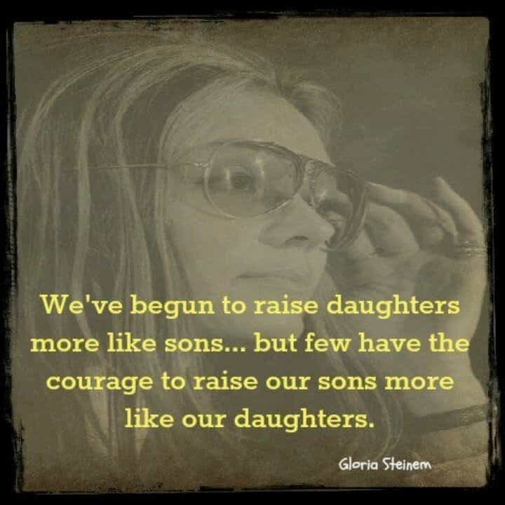

A coloured South African, and student of the ancient near east.


Over the past two weeks random crimes were weaved into an already established media narrative and a new social media campaign was born: #Men are Trash. It’s now shameful to be a man. We look like sex crazed maniacs, and we should feel bad. That’s the latest feminist siren song enslaving schools of South Africans.
#MenAreTrash has been gaining huge traction on local social media over the last few weeks, at one point it was even trending number 1 on South African twitter. So what is this #? “Men are Trash”, for some it’s easy to read that phrase and label it an “attack on all men”. But one has to then ask themselves, what is a personal attack and what’s a necessary wake-up call.
According to the idea motivating this movement, man is the manifestation of villainy and violence. But if we are all that this tag suggests, why does feminist identity and behaviour involve blatant attempts to enter the masculine sphere of identity? If their cause is so anti-male, why can they only express their ideas through borrowed masculine traits? Are they trying to become the men they are so averse to?

Answer: They are trying to look powerful. They are trying to display wisdom. They are trying to appear strong and aggressive. They they doing this because power, or their conception of it, happens to be apprehended in masculine iconography. To understand their conception of power, I examined a few ancient figures who have become iconic vehicles for feminist cultural expression.
The revival of She who Consecrates a Phallus.
Their rhetoric bypasses Jesus’s ladylike mother in favour of her pagan predecessor, Horus’s mother, Isis. Today, this ancient goddess is synonymous with feminist branding and ideology. As an icon of girl-power, she is superficially inspiring but Isis has more influence on their identity than they would want to openly acknowledge.
It’s generally accepted that, unlike other cultures of the ancient near east, Egyptian women occupied a social role of complete equality with men. So it’s strange that the power of this mother goddess could only be imagined through a man’s role in a phallocentric myth.
Her story is this: her husband is emasculated through castration. Her intensely obsessive attachment to his manhood compels her to commit acts of fetishism and necrophilia. That is to say, she creates and magically animates a replica of his phallus which she proceeds to mount in order to conceive. Diodorus of Sicily (80-20 BC) wrote: “fashioning a likeness of it, she set it up in the temples, commanded that it be honoured, and made it the object of the highest regard and reverence in the mystic rites and sacrifices accorded to the gods.”
Having performed the sexual act on her own, Isis’s power is expressed by her playing the dominant role of a man in the sacred union. This, she proudly states in the Glorification of Osiris: “I have played the part of a man though I am a woman.”
Isis as a kite in union with a dead Osiris.
Nefertiti in her influential role as a wife and mother.
The queens of the 18th Dynasty — Tiye, Hatshepsut and Nefertiti — are the most frequently referenced in feminist rhetoric, especially when African heritage needs to be validated and profited from. These three women reigned during Egypt’s age of empire. The state was wealthy, cosmopolitan and characterized by the abandoning of its old ways.
Tiye and Nefertiti were women of influence and recent theories contend that they were co-regents. Hatshepsut did rule, spending most of her reign extracting resources from the soft target that was Nubia. All three derived their power and influence from their roles as the mothers and wives of kings. But at various points they decided to supplement their public image by representing themselves in masculine form and roles. This was done to legitimize their leadership capabilities.
So even though these feminist antecedents were among the wealthiest and most powerful people in their country’s most prosperous period, they still found their feminine form restrictive, most likely because an ancient ruler’s physical appearance would have to meet the public’s expectation of safety and security. Smiting the enemy or agents of chaos is the most familiar Egyptian iconographic motif. It’s a traditionally male military activity, thereby making the title of pharaoh a traditionally male title.
The Bearded form of Hatshepsut trying to placate national security concerns.
The mighty smiting queen is not just an idea of limited scope, it’s also based entirely on deception. These three had no significant military successes. They were basically imitations of a core foundational element of Egyptian culture. In the case of Tiye and Nefertiti, one would expect the mother and wife of the great religious and artistic revolutionary, Akhenaten, to at least be more creative with a lie than this heavy dependence on an established masculine tradition.
In resorting to masculine depictions and war motifs for the sake of a social equality that already existed, all three only reduced the inherent power they had as wives and mothers.
Men may be cast as the violent villain of the feminist narrative, but the reason why power seems inherent to masculine imagery is that significant cultural achievements exist to validate these symbols.
The image of a leader who took a small population to high culture in a short period of time.
Negative campaigns like Men are Trash, and the conveniently coincidental Hollywood release of Wonder Woman this summer are just dramatic overcompensations for a glaring lack of significant achievement, a fact that feminists are painfully aware of. This is not a value judgment, it’s just women’s history, where the best is always yet to come.
The image of having usurped Bombaata’s position in Conan the Destroyer.
In their effort to recreate the feminine form as a masculine phenotype, there is the sincere acknowledgment that power can only exist in broad-shouldered and warlike imagery. They are thoughtlessly going back in the direction of patriarchy while trying to cast themselves in their villain’s role.

A redundant accessory to her power, but wonder woman’s phallic symbol is required for her to usurp the Man of Steel’s position in the DC pantheon.
As it has before, the pendulum will swing back from its current extreme. In the meantime, display the confidence that only your original form can possess in a world that is now full of poor imitations.
Read More: 5 Huge Problems That 50 Years Of Feminism Created